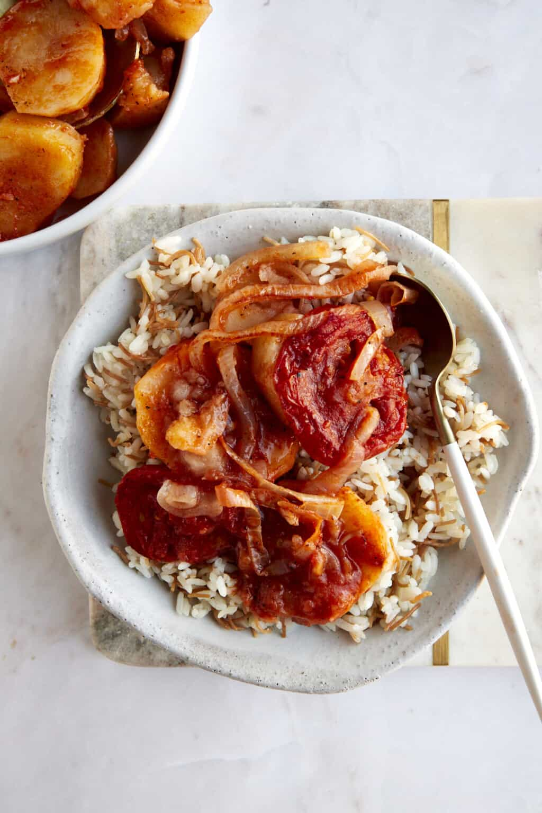

Potato casserole (Sanyet El Batates)
hearty and nutritious comfort food recipe that brings a touch of Egypt to your table.

Description
Sanyet el batates, or Egyptian baked potatoes, is a classic Egyptian recipe found in almost every home but rarely made in restaurants. We grew up eating these, and they remain one of our favorite recipes!
Most recipes are made with potato slices, tomatoes, onions, and either vegetable or chicken broth. You can also add chicken or meat pieces on top before baking.
Honestly, these potatoes with tomatoes are too good not to share! However, we took our mom’s recipe and lightened it up a bit, using a lot less oil and butter than you’ll typically find.
Ingredients
- Potatoes: Yukon gold potatoes are best as they have a higher starch content and a rich, buttery flavor. Russet potatoes will also work, but the taste and texture of the dish will change slightly.
- Garlic: Use whole, fresh garlic cloves, not garlic powder or pre-minced varieties!
- Onion: We use a yellow onion as it has a slightly sweeter flavor, but white onions will also work.
- Seasonings: Salt, black pepper, and cinnamon create a savory flavor with just a subtle hint of sweetness.
- Tomatoes: Use large beef steak tomatoes for the best results.
- Tomato Sauce: This helps soften the potatoes while enhancing the acidic, savory flavor and creating an almost stew-like consistency.
- Olive Oil: Use a high-quality olive oil with a bold, peppery flavor!
- Water: This helps combine the ingredients and soften the potatoes.
How to make sanyet el batates
- Combine. Add the sliced potatoes, chopped garlic cloves, and sliced onions in a baking dish, arranging them in a single layer.
- Season. Sprinkle part of the salt pepper, and cinnamon over the mixture. Then, drizzle olive oil on top. Gently rub the seasonings into the veggies, making sure they’re well coated.
- Add the remaining ingredients. Slice the tomatoes, and arrange them on top of the potato mixture. Next, pour the tomato sauce and water over the ingredients, allowing the liquid to distribute naturally. Do not mix the ingredients!
- Bake. Cover the baking dish with aluminum foil, and transfer it to a preheated oven. Bake until the potatoes are fork-tender and cooked through.
- Serve. Allow your potatoes with tomatoes to cool slightly. Then, serve warm with vermicelli rice!
Tips for best experience
- toss on some chicken or other meat.
- instead of water, use broth.
- don't overuse garlic, you want to enjoy the potatoes and not the garlic.
Go back